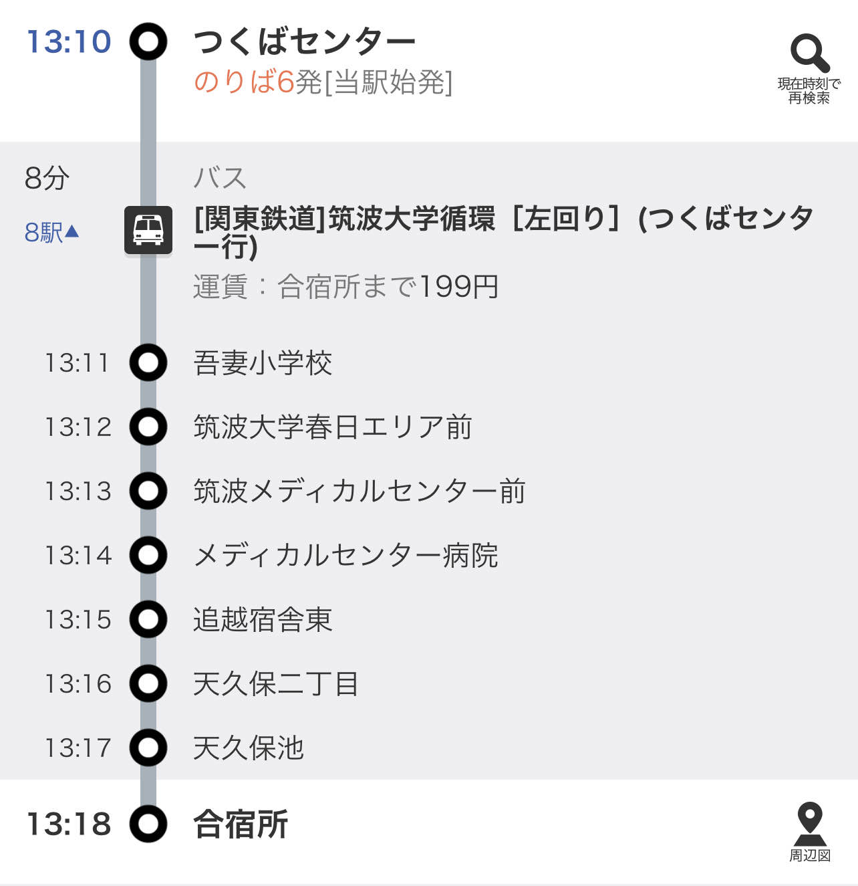

| １３：３０～１３：５０ | 受付 |
|---|---|
| １４：００～１４：２０ | オープニング・自己紹介 |
| １４：２０～１４：３０ | 休憩 |
| １４：３０～１５：３０ | 学内見学 |
| １５：３０～１５：４０ | 休憩 |
| １５：４０～１６：２０ | レクリエーション |
| １６：２０～１６：３０ | エンディング |
●住所
〒305-8521
茨城県つくば市天久保4-3-15
●アクセス
・つくばエクスプレス つくば駅（徒歩約30分/車約10分）
・関東鉄道バス（筑波大学循環） 合宿所駅（徒歩約5分）

Google マップはこちらへ！